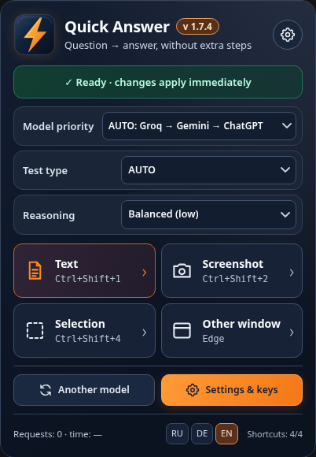
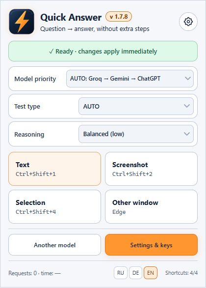

Windows 11 · Microsoft Edge · 1.7.8 Edge · Desktop 0.1 Preview
Quick Answer —
User guide
Quick answers right in your browser
Quick Answer analyzes text and screenshots in Microsoft Edge. Choose a model, trigger a shortcut, and get a concise response.


Installation
Download the ZIP from Releases and extract the whole folder. Open edge://extensions, enable Developer mode, choose Load unpacked, and select the edge-quick-answer folder.
Quick launch
Ctrl+Shift+1 reads page text, Ctrl+Shift+2 captures JPEG, Ctrl+Shift+4 selects a region, and Ctrl+Shift+3 cycles the question mode. For another window use Edge’s permission-based screen picker.
Question formats
AUTO attempts to detect the type. Regular questions return numbers and a brief explanation; Kahoot returns a color. Always verify ambiguous model answers.
Models and keys
Enter your Groq and Gemini keys in Settings. On applicable failures, the extension tries the next available key or provider. ChatGPT requires an independently running local Codex Bridge.
Diagnostics and limitations
Watch request counts and response time. Keep keys in your Edge profile or a password-encrypted backup. Text and screenshots are sent to the chosen provider; latency cannot be guaranteed.
Windows Desktop 0.1 — untested source Preview
Extract the desktop archive and run START_QuickAnswer.cmd. Requires Windows 10/11, Windows PowerShell 5.1, WinForms and .NET Framework. No compiled EXE is supplied. Ctrl+Alt+1 captures the screen, Ctrl+Alt+2 the foreground window, Ctrl+Alt+4 a region. Keys use DPAPI CurrentUser. Images go to the selected provider. Runtime, providers, DPI and hotkeys have not been verified. The bundled Bridge accepts browser extension origins only; desktop Bridge is currently incompatible.